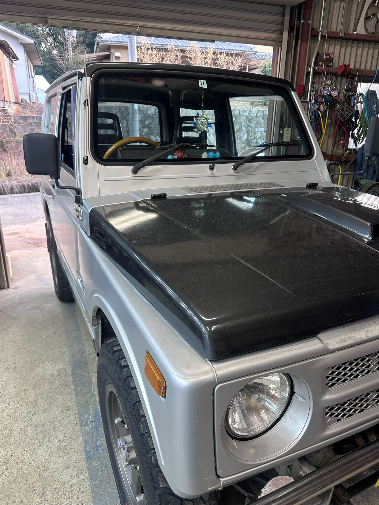

WORK 02
JA11エンジン不調でリビルトエンジンに載せ替え
/ 作業事例
整備記録 // JA11

JA11が調整だけでは改善しないエンジン不調でご入庫。圧縮や内部の状態を確認したところ、 オリジナルエンジンが限界に近い状態だったため、リビルトエンジンへの載せ替えをご提案しました。
オリジナルエンジンを降ろしてリビルトエンジンを搭載。配線・配管・リンケージ類を一つひとつ組み直し、 安心して日常使いできる状態に仕上げました。
- エンジン不調の原因診断（圧縮・内部状態の確認）
- オリジナルエンジンの取り下ろし
- リビルトエンジンの搭載、配線・配管・リンケージの接続
- 試運転・動作確認
※ このページはサンプル原稿です。実際の作業内容に合わせて書き換えてください。